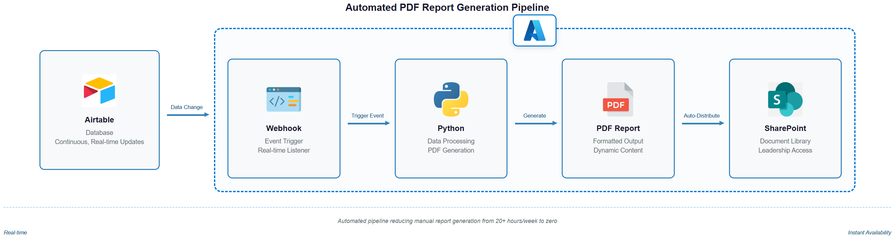
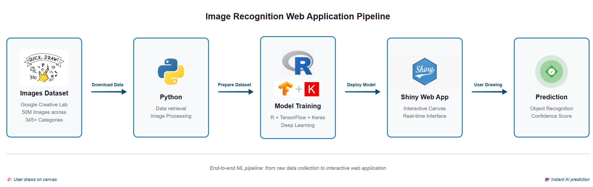
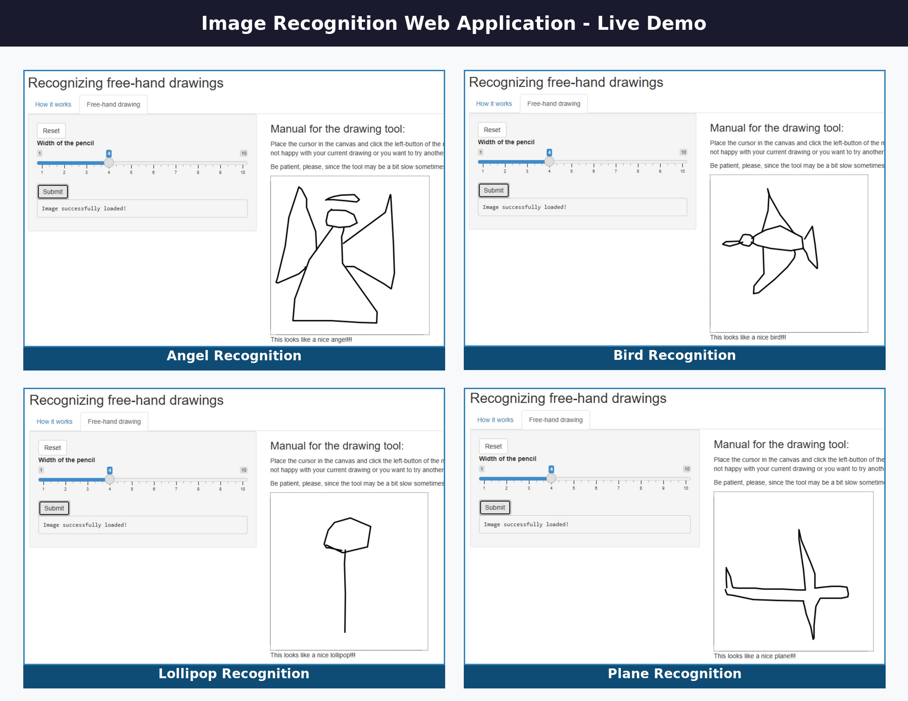
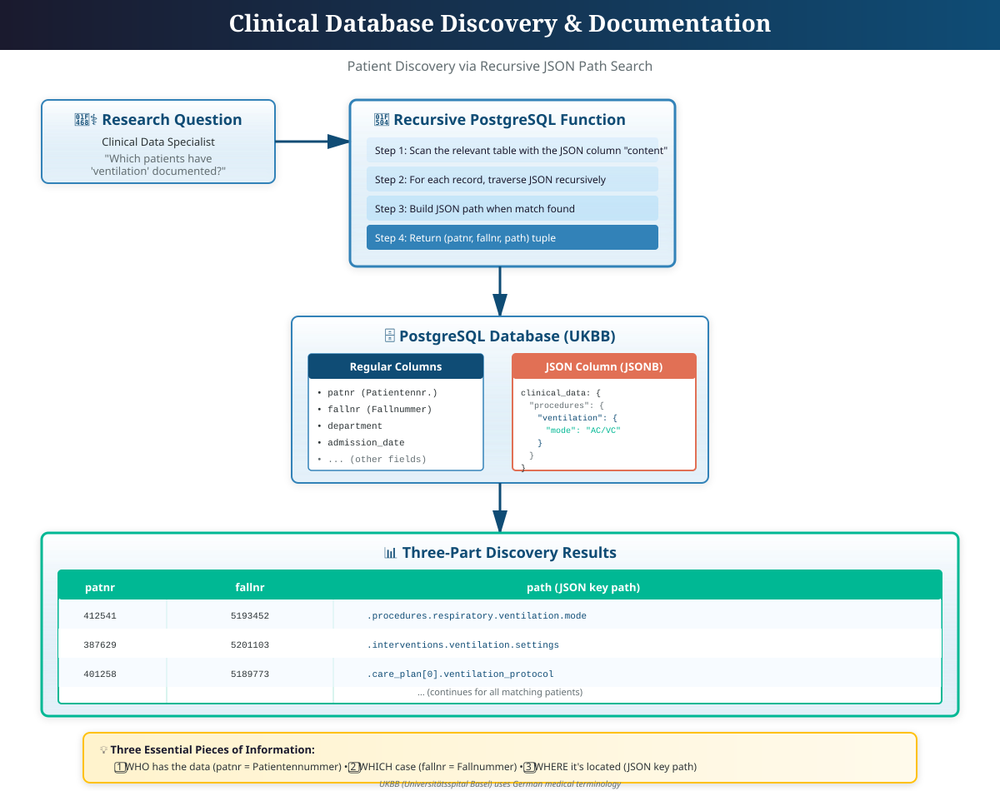
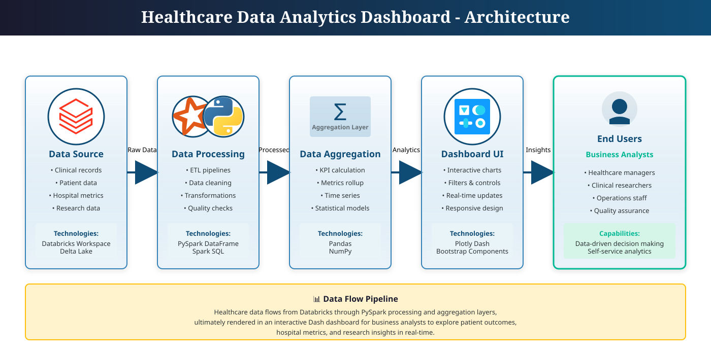
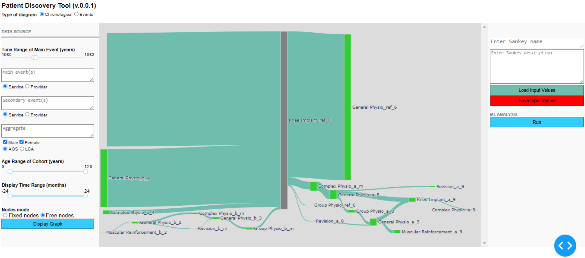
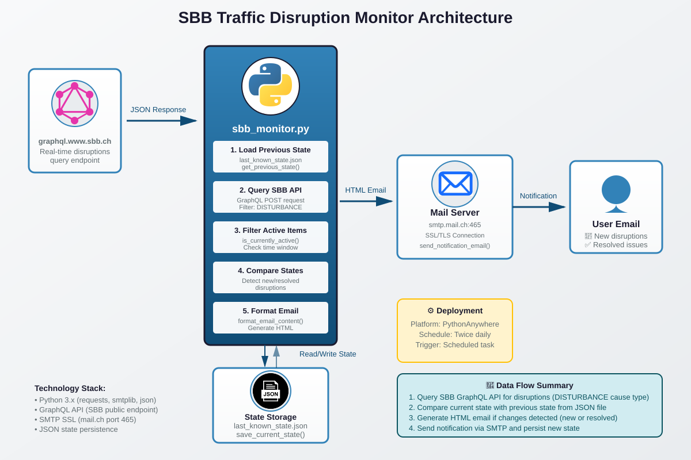
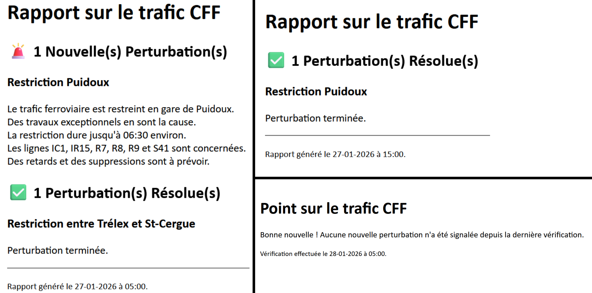

Senior Data Engineer | Healthcare Data Specialist
I am a Data Engineer with over 10 years of experience in designing and implementing software to predict and analyze complex multi-physics phenomena. After completing my PhD at EPFL in Electrical Engineering developing simulation software for space satellites and particle accelerators (in C, C++, and Fortran) I spent four years working on CNES-funded projects in France. I pivoted in 2020 to focus my technical skills on data engineering with a particular emphasis on healthcare applications.
Since then, I have contributed to several initiatives delivering digital solutions that help business analysts and researchers make better decisions by improving the quality, reliability, and availability of their data. I design and implement automated pipelines to extract, transform, and deliver data—turning raw information into something people can actually trust and use.
Since then, I have contributed to several initiatives delivering digital solutions that help business analysts and researchers make better decisions by improving the quality, reliability, and availability of their data. I design and implement automated pipelines to extract, transform, and deliver data—turning raw information into something people can actually trust and use.
Throughout my career, I've developed a holistic approach to data engineering that bridges technical implementation with domain expertise. Whether reverse-engineering complex clinical databases, implementing statistical validations, or architecting scalable pipelines, I believe the most impactful solutions come from understanding the full data lifecycle—from source systems to stakeholder insights. In healthcare particularly, this end-to-end perspective ensures we build solutions that are not just technically sound, but genuinely serve clinical and research needs.
Azure Data Factory, Azure Services, Databricks, PySpark, GCP (Cloud Run)
MongoDB, PostgreSQL, MS SQL, GraphDB
Advanced SQL (procedures, triggers, CTEs, windowing), Dimensional & 3NF Modeling, Graph Databases
Python, Javascript, C, C++, R, Fortran, Bash, Batch
Git, Docker, Jira, Airflow
Tableau, PowerBI, Python (Seaborn, Matplotlib), R (ggplot2)
Click on the cards to display the details...
Real-time PDF report generation system using Python, ingesting live data from Airtable via webhooks for the Health Finance department of The Global Fund.
Problem: The Global Fund's Health Finance team needed to manually generate Qualitative Adjustment assessment reports for grant-eligible countries fighting HIV, Tuberculosis, and Malaria. With more than 10 health finance specialists continuously updating an Airtable database in real-time, monitoring about 100 countries, the team spent 20+ hours per week manually extracting, processing and delivering up-to-date reports—a process that was both time-intensive and prone to inconsistencies.
Solution: Developed an automated pipeline that integrates with Airtable webhooks to capture real-time data updates, dynamically generates formatted PDF reports with current database content, and automatically distributes them to SharePoint for immediate access by the Health Finance department leadership. The solution eliminated manual compilation while ensuring report accuracy and availability.

Congo (Democratic Republic)
Eswatini
Ethiopia
Ghana
Health Risk World
5-day personal learning project (2021) exploring machine learning and web development. Built an interactive image recognition app using R Shiny, Keras/TensorFlow, and Docker—from data collection to deployed web interface.

Built a production-ready web application combining machine learning capabilities with modern DevOps practices. The application features real-time image processing, containerized deployment for consistency across environments and an intuitive user interface for non-technical users.

📖 Click screenshot to go to Web App in live →
This personal project demonstrates the combination of R Shiny as frontend technology with Python scikit-learn package as backend to build a scalable and powerful online application for image recognition. The code is containerized using Docker to fully enable scalability at ease. The full source code, documentation, and setup instructions are available on GitHub: https://github.com/esorolla/ImageRecognition
Reverse-engineered an undocumented PostgreSQL database containing clinical data, creating comprehensive documentation and data lineage mapping.
Challenge: Inherited an undocumented PostgreSQL database with 30+ tables containing critical clinical research data. No data dictionary, no documentation, no clear understanding of relationships.
Approach: Developed advanced SQL scripts to systematically analyze table structures, foreign key relationships, data patterns, and usage statistics. Created automated documentation and visual schema representations.

📖 Click schema to view detailed technical documentation →
The solution uses two PostgreSQL functions working together: a main wrapper that scans database records, and a recursive core that traverses unknown JSON structures to build complete key paths. The functions return three-part tuples: (patient_id, case_id, json_path).
High-performance web application using Python Dash and PySpark to extract, aggregate, and visualize large-scale healthcare data to enhance customers' experience.
Context: Business analysts at Groupe Mutuel needed real-time access to the health pathways of customers to analyze both the prevalence and chronological order of clinical interventions from the pool of customers' data.
Solution: Built a scalable web application that processes millions of records using PySpark, presents the health pathway of customers in form of a Sankey diagram over a Web Application accessible to Business Analysts. The tool is constructed with the help of Dash-Plotly-a Python library based in React to build custom professional dashboards- and Bootstrap components, the world's most popular framework for building responsive, mobile-first sites. This replaced manual Excel-based reporting workflows increasing the availability and the accuracy of data for real-time analysis.


Personal project to automate a monitoring system for Swiss Federal Railways network disruptions with real-time email notifications and state tracking.
Problem: Need for real-time awareness of Swiss railway disruptions affecting daily commute in the French part of Switzerland, without manually checking the SBB website multiple times per day.
Solution: Built an automated Python script that queries the SBB GraphQL API, tracks changes between runs using JSON state management and sends HTML email notifications only when new disruptions occur or existing ones are resolved. Deployed on PythonAnywhere with scheduled execution one hour before planned trips to anticipate issues.


This personal project demonstrates API integration, automation, and practical problem-solving. The full source code, documentation, and setup instructions are available on GitHub: github.com/esorolla/sbb-traffic-monitor
ANTAES SA - Healthcare sector | Geneva
Aug 2025 - Jan 2026
Terre des hommes | Lausanne
May 2025 - Aug 2025
DFAC with Qim Info | Fribourg
Sep 2024 - Dec 2024
Pediatric Research Center (UKBB) | Basel
Apr 2023 - Jul 2024
The Global Fund | Geneva
June 2022 - Apr 2023
Groupe Mutuel | Sion
Sep 2021 - Feb 2022
SITEM-INSEL | Bern
Mar 2021 - Aug 2021
SICHH | Fribourg
Jan 2021 - Feb 2021
EPFL-CNES | Switzerland-France
2008 - 2020
EPFL, Lausanne
University of Valencia, Spain
University of Valencia, Spain
Imperial College London
April – July 2021
University of Michigan
Nov 2020 – Jan 2021
John Hopkins University
May – Aug 2020
stepik.org
Sep 2020
stepik.org
Sep 2020
Beyond formal courses, I hold several professional certifications demonstrating expertise in industry-standard tools and technologies
Udemy
June 2024
LinkedIn Learning
Aug 2021
LinkedIn Learning
Aug 2021
University of Michigan
Dec 2020
University of Michigan
Jan 2021
University of Michigan
Jan 2021
University of Michigan
Dec 2020
Johns Hopkins University
July 2020
Johns Hopkins University
July 2020
Johns Hopkins University
July 2020
Johns Hopkins University
June 2020
Johns Hopkins University
Aug 2020
Johns Hopkins University
Aug 2020
Johns Hopkins University
July 2020
Johns Hopkins University
Aug 2020
Bataillon Sarine | Fribourg, Switzerland
2020 – Present
Collaborate effectively within a team to resolve high-pressure emergencies, demonstrating reliability, clear communication, and adherence to safety protocols.